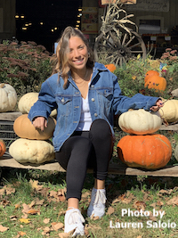

This portfolio website was created by Lauren Saloio as part of English 391c: Advanced Software for Professional Writers. English 391c is a required class for the Professional Writing and Technical Communication Certificate at the University of Massachusetts Amherst. The major goals of this course are to learn how to create web content using HTML, CSS, and Adobe Photoshop, and to create an online portfolio of content that demonstrates our skills as a web designer and professional writer.
 I am a senior at the University of Massachusetts Amherst, studying English with a Certificate in Professional Writing and Technical Communication. After I graduate in May of 2023, I plan to pursue a career in technical writing with an additional interest in UX/UI design and frontend development. I am currently interning with the Data Science for the Common Good team at the Center for Data Science at the University of Massachusetts Amherst. Through this internship opportunity and the Professional Writing and Technical Communication Certificate Program, I have been able to connect my passion for both writing and technology with my career path.